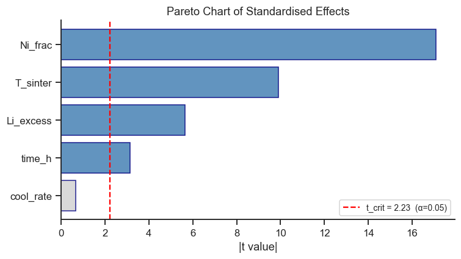

18. Fractional Factorial Designs#
When the number of factors \(k\) grows, the \(2^k\) full factorial becomes expensive. A \(2^{k-p}\) fractional factorial uses only \(2^{k-p}\) of the full \(2^k\) runs, reducing the run count at the cost of aliasing (confounding) of effects.
Design resolution indicates the severity of aliasing:
Resolution III — Main effects are aliased with 2FIs (estimable, but not trustworthy on their own if those interactions turn out to be real)
Resolution IV — Main effects clear; 2FIs aliased with other 2FIs
Resolution V — All main effects and 2FIs are clear
Topics
Design generators and the defining relation
Aliasing structure
Generating fractional factorials with pyDOE3
Analysing a fractional factorial experiment
Case study: 5-factor screening for Li-ion cathode synthesis
import numpy as np
import pandas as pd
import matplotlib.pyplot as plt
import seaborn as sns
import pyDOE3
import statsmodels.formula.api as smf
from scipy import stats
sns.set_theme(style='ticks', palette='colorblind')
plt.rcParams.update({'figure.dpi': 110, 'font.size': 11})
rng = np.random.default_rng(99)
18.1 Design Generators and Aliases#
Five factors would need a full \(2^5 = 32\)-run factorial. Suppose we can only afford 16 runs. A half-fraction (\(2^{5-1}\)) does exactly that: it takes the 16-run design for the first 4 factors and reuses the same runs for the 5th factor by deliberately setting its pattern equal to the interaction of the other four:
Every run therefore does double duty — it tells you something about factor 5 and about the 4-way interaction of the others, but the data cannot tell which of the two is responsible for what you observe. This blending is aliasing, and the equation above (written \(I = ABCDE\), the defining relation) is the exact “recipe” of what got blended with what — see Section 2 of the theory page for the full explanation and why this particular choice of generator (Resolution V) is a safe one: it only blends main effects with unlikely-to-matter higher-order interactions, never with each other.
# pyDOE3 fracfact: string specifies columns
# 'a b c d abcd' → 5th column = x1·x2·x3·x4 (Resolution V)
design_5frac = pyDOE3.fracfact('a b c d abcd')
n_runs = design_5frac.shape[0]
factor_names = ['T_sinter', 'time_h', 'Ni_frac', 'Li_excess', 'cool_rate']
df_frac = pd.DataFrame(design_5frac, columns=factor_names)
print(f'2^(5-1) design: {n_runs} runs (vs 32 for full factorial)')
print(df_frac.to_string(index=False))
2^(5-1) design: 16 runs (vs 32 for full factorial)
T_sinter time_h Ni_frac Li_excess cool_rate
-1.0 -1.0 -1.0 -1.0 1.0
-1.0 -1.0 -1.0 1.0 -1.0
-1.0 -1.0 1.0 -1.0 -1.0
-1.0 -1.0 1.0 1.0 1.0
-1.0 1.0 -1.0 -1.0 -1.0
-1.0 1.0 -1.0 1.0 1.0
-1.0 1.0 1.0 -1.0 1.0
-1.0 1.0 1.0 1.0 -1.0
1.0 -1.0 -1.0 -1.0 -1.0
1.0 -1.0 -1.0 1.0 1.0
1.0 -1.0 1.0 -1.0 1.0
1.0 -1.0 1.0 1.0 -1.0
1.0 1.0 -1.0 -1.0 1.0
1.0 1.0 -1.0 1.0 -1.0
1.0 1.0 1.0 -1.0 -1.0
1.0 1.0 1.0 1.0 1.0
18.2 Simulate the Cathode Screening Experiment#
Five synthesis factors for NMC (Ni₀.₆Mn₀.₂Co₀.₂) O₂:
Factor |
Low (–1) |
High (+1) |
|---|---|---|
T_sinter (°C) |
750 |
900 |
time_h (h) |
6 |
18 |
Ni_frac |
0.5 |
0.7 |
Li_excess (%) |
0 |
5 |
cool_rate (°C/min) |
1 |
5 |
Response: first-cycle discharge capacity (mAh/g)
# True model (only a few effects are real — others are noise)
def capacity(x1, x2, x3, x4, x5):
return (175
+ 8*x1 # T_sinter — strong effect
+ 3*x2 # time_h — moderate
+ 15*x3 # Ni_frac — largest effect
+ 4*x4 # Li_excess — moderate
- 2*x5 # cool_rate — small
+ 2*x1*x3 # T × Ni interaction
+ rng.normal(0, 3))
df_frac['capacity'] = [
capacity(*row) for row in df_frac[factor_names].values
]
# Add natural variable values
df_frac['T_C'] = 825 + 75 * df_frac['T_sinter']
df_frac['t_h'] = 12 + 6 * df_frac['time_h']
df_frac['Ni'] = 0.6 + 0.1 * df_frac['Ni_frac']
df_frac['Li_pct'] = 2.5 + 2.5 * df_frac['Li_excess']
df_frac['CR'] = 3 + 2 * df_frac['cool_rate']
print(df_frac[factor_names + ['capacity']].round(1).to_string(index=False))
T_sinter time_h Ni_frac Li_excess cool_rate capacity
-1.0 -1.0 -1.0 -1.0 1.0 145.2
-1.0 -1.0 -1.0 1.0 -1.0 155.6
-1.0 -1.0 1.0 -1.0 -1.0 175.2
-1.0 -1.0 1.0 1.0 1.0 181.1
-1.0 1.0 -1.0 -1.0 -1.0 149.7
-1.0 1.0 -1.0 1.0 1.0 164.1
-1.0 1.0 1.0 -1.0 1.0 175.6
-1.0 1.0 1.0 1.0 -1.0 187.2
1.0 -1.0 -1.0 -1.0 -1.0 157.9
1.0 -1.0 -1.0 1.0 1.0 167.8
1.0 -1.0 1.0 -1.0 1.0 193.0
1.0 -1.0 1.0 1.0 -1.0 206.7
1.0 1.0 -1.0 -1.0 1.0 165.7
1.0 1.0 -1.0 1.0 -1.0 175.8
1.0 1.0 1.0 -1.0 -1.0 202.0
1.0 1.0 1.0 1.0 1.0 207.8
18.3 Analysing the Fractional Factorial#
With only 16 runs available, fitting all 5 main effects and every one of the 10 possible two-factor interactions would use up every run just to estimate coefficients, leaving nothing left over to estimate how much experimental noise is present — you would have no way to tell a real effect from random scatter. This is the practical price of screening with fewer runs: the analysis below fits main effects only, which is exactly enough to answer the screening question (“which of these 5 factors actually matter, and in which direction?”) while still leaving spare runs to estimate noise and compute p-values.
# Main-effects model (2FIs are aliased in a half-fraction for k=5)
model_frac = smf.ols(
'capacity ~ T_sinter + time_h + Ni_frac + Li_excess + cool_rate',
data=df_frac
).fit()
print(model_frac.summary())
OLS Regression Results
==============================================================================
Dep. Variable: capacity R-squared: 0.977
Model: OLS Adj. R-squared: 0.966
Method: Least Squares F-statistic: 86.45
Date: Tue, 01 Sep 2026 Prob (F-statistic): 6.74e-08
Time: 17:42:50 Log-Likelihood: -39.490
No. Observations: 16 AIC: 90.98
Df Residuals: 10 BIC: 95.62
Df Model: 5
Covariance Type: nonrobust
==============================================================================
coef std err t P>|t| [0.025 0.975]
------------------------------------------------------------------------------
Intercept 175.6473 0.903 194.532 0.000 173.635 177.659
T_sinter 8.9367 0.903 9.898 0.000 6.925 10.949
time_h 2.8377 0.903 3.143 0.010 0.826 4.849
Ni_frac 15.4273 0.903 17.086 0.000 13.415 17.439
Li_excess 5.1093 0.903 5.659 0.000 3.097 7.121
cool_rate -0.6109 0.903 -0.677 0.514 -2.623 1.401
==============================================================================
Omnibus: 1.442 Durbin-Watson: 1.689
Prob(Omnibus): 0.486 Jarque-Bera (JB): 0.910
Skew: 0.216 Prob(JB): 0.634
Kurtosis: 1.914 Cond. No. 1.00
==============================================================================
Notes:
[1] Standard Errors assume that the covariance matrix of the errors is correctly specified.
Take-home message
Ni_frac (+15.4) and T_sinter (+8.9) are, as designed, the two largest and most significant effects (p<0.0001 each) — screening’s job was to find the factors that matter most, and with only 16 runs it has done exactly that.
cool_rate is the one factor that correctly fails to reach significance (coefficient −0.61, p=0.514) — it was built in with a true effect of only −2, small enough relative to the noise that this half-fraction cannot confidently separate it from zero. That is the honest, expected outcome of a deliberately economical design: real but small effects sometimes need more runs than a screening study affords to detect reliably.
# Pareto chart of standardised effects
coef = model_frac.params.drop('Intercept')
se = model_frac.bse.drop('Intercept')
t_vals = np.abs(coef / se)
sorted_idx = np.argsort(t_vals.values)[::-1]
sorted_t = t_vals.values[sorted_idx]
sorted_names = [coef.index[i] for i in sorted_idx]
t_crit = stats.t.ppf(0.975, df=model_frac.df_resid)
fig, ax = plt.subplots(figsize=(7, 4))
colors = ['steelblue' if v > t_crit else 'lightgray' for v in sorted_t]
ax.barh(sorted_names[::-1], sorted_t[::-1], color=colors[::-1],
edgecolor='navy', alpha=0.85)
ax.axvline(t_crit, color='red', ls='--', lw=1.5,
label=f't_crit = {t_crit:.2f} (α=0.05)')
ax.set_xlabel('|t value|')
ax.set_title('Pareto Chart of Standardised Effects')
ax.legend(fontsize=9)
sns.despine(ax=ax)
plt.tight_layout()
plt.show()

Take-home message
Four of the five bars clear the red |t|=2.23 line, and by a wide margin — Ni_frac’s bar (t=17.1) is nearly eight times taller than the threshold, T_sinter’s (t=9.9) almost five times taller. cool_rate is the only grey bar, at t=0.68, not even a third of the way to significance — visually obvious without reading a single p-value off the regression table above.
Ranking by bar height also ranks the factors by how much of the capacity variation each one explains, which is exactly the screening question this design was built to answer: prioritise Ni fraction and sintering temperature for any follow-up RSM study (Notebook 19), and don’t spend a limited experimental budget chasing cool_rate any further without more data.
Reading the Pareto Chart#
This chart ranks every factor by how confidently its effect can be
distinguished from noise (|t value| — a standardised version of the effect
size from Part III’s hypothesis-testing notebook: roughly, “how many
noise-widths away from zero is this effect?”). Bars that cross the red
dashed line are statistically significant at the 5% level; bars coloured
grey do not clear that bar and should be treated as “no detectable effect
given this data,” not necessarily “definitely zero effect.” In this cathode
example, Ni fraction and sintering temperature are expected to stand out as
the largest bars, matching the strong coefficients built into the
simulation above.
18.4 Resolution III — Saturated Design Example#
Sometimes resources are so limited that even a half-fraction is too many
runs. A Resolution III design pushes the idea further: with 7 factors in
only 8 runs (2^(7-4)), almost every column is doing multiple jobs at once,
and every main effect is aliased with three different two-factor
interactions (e.g. A here is aliased with BD, CE, and FG all at once). This
is the cheapest possible screening design (called “saturated” because there
are barely enough runs to estimate the main effects at all, with essentially
no runs left to check the model).
Use this only when you must screen many candidate factors on a tight budget and are willing to assume that two-factor interactions are small enough to ignore for now — an assumption you should revisit with a follow-up experiment (see Exercise 1 below) once the important few factors are identified.
design_7_8 = pyDOE3.fracfact('a b c ab ac bc abc')
print(f'2^(7-4) design: {design_7_8.shape[0]} runs')
print(pd.DataFrame(design_7_8,
columns=[f'x{i+1}' for i in range(7)]).to_string(index=False))
2^(7-4) design: 8 runs
x1 x2 x3 x4 x5 x6 x7
-1.0 -1.0 -1.0 1.0 1.0 1.0 -1.0
-1.0 -1.0 1.0 1.0 -1.0 -1.0 1.0
-1.0 1.0 -1.0 -1.0 1.0 -1.0 1.0
-1.0 1.0 1.0 -1.0 -1.0 1.0 -1.0
1.0 -1.0 -1.0 -1.0 -1.0 1.0 1.0
1.0 -1.0 1.0 -1.0 1.0 -1.0 -1.0
1.0 1.0 -1.0 1.0 -1.0 -1.0 -1.0
1.0 1.0 1.0 1.0 1.0 1.0 1.0
Exercises#
Fold-over design: A Resolution III design can be de-aliased by running the fold-over (multiply all factor columns by −1). Combine the original 8 runs and the fold-over 8 runs. What resolution is the combined 16-run design?
Alias analysis: For the
2^(5-1)design with generator \(I = ABCDE\), manually compute the aliasing of theT_sinter × Ni_frac(AB) interaction. Which effect is it confounded with?Plackett-Burman: Generate a 12-run Plackett-Burman design for 11 factors using
pyDOE3.pbdesign(11). Discuss when you would prefer this over a \(2^{11-7}\) fractional factorial.